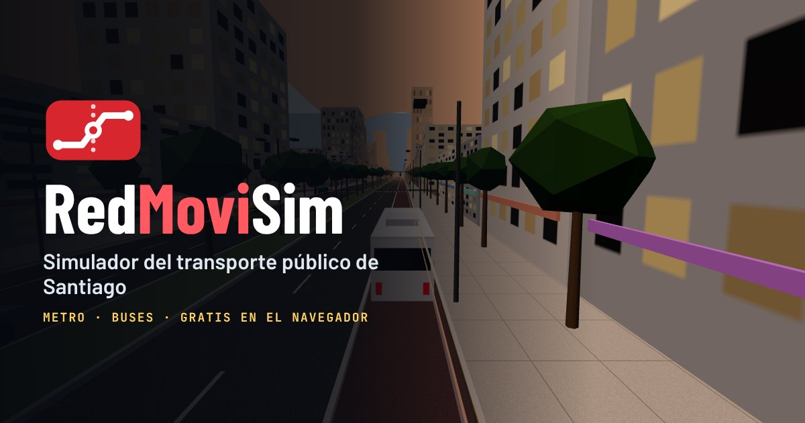

RedMoviSim: el simulador del transporte público de Santiago
RedMoviSim es un juego gratis en 3D del Metro de Santiago, los buses Red y los trenes de EFE. Puedes conducir un tren, manejar una micro o un taxi por calles reales, viajar como pasajero o dirigir toda la red desde el Centro de Control. Se juega en el navegador del computador o del celular, sin descargar nada.
Jugar gratis ahora
Qué puedes hacer
Conducir el Metro y los trenes
Maneja los trenes del Metro en las líneas 1, 2, 3, 4, 4A, 5 y 6, el Tren Nos (Estación Central a Nos) y el Tren Rancagua, con señales, pendientes, horarios y estaciones reales. Gana puntos por llegar a la hora y frenar suave.
Manejar buses Red y taxi
Más de 20 recorridos reales de Red (110, 201, 210, 430, 517 y otros) por la Alameda, Providencia, Gran Avenida o Vicuña Mackenna, con paraderos, semáforos, pista Solo Bus y pasajeros que pagan con la bip!. En el taxi haces carreras con taxímetro.
Viajar como pasajero
Parte en la calle, baja al andén, paga el pasaje con tarifa integrada, espera el tren entre la gente y haz combinaciones. En hora punta los andenes se llenan.
Dirigir el Centro de Control
Como jefe de turno del PCC, vigila la red en un esquema, retiene trenes y responde a incidentes: puertas obstruidas, fallas de señal y restricciones de velocidad.
Multijugador con amigos
Un jugador abre una sala del Centro de Control y hasta 4 amigos conducen trenes en la misma red, cada uno desde su computador o celular. Basta compartir el código de 4 letras. El Centro de Control da órdenes por radio, retiene trenes y autoriza señales averiadas.
En el celular y en el PC
Funciona en Android, iPhone, tablet y PC (Windows, macOS o Linux) con cualquier navegador moderno. En el celular se juega acostado, con controles táctiles. Se puede instalar como app desde la portada y, después de la primera partida, funciona sin internet. Con una cuenta (solo tu correo) guardas tu avance y sigues en otro dispositivo.
Preguntas frecuentes
¿RedMoviSim es gratis?
Sí. Se juega gratis en el navegador, sin descargar nada. También se puede instalar como app en el celular.
¿Funciona en el celular?
Sí. Funciona en Android, iPhone, tablet y PC, con controles táctiles en el celular (se juega con el celular acostado). En Android también hay una app (APK).
¿Qué líneas del Metro de Santiago tiene?
Las líneas 1, 2, 3, 4, 4A, 5 y 6 del Metro, con sus estaciones y combinaciones, además del Tren Nos y el Tren Rancagua de EFE.
¿Se pueden manejar buses de Red?
Sí. Hay más de 20 recorridos reales de Red (como el 110, 201, 210, 430 o 517) por calles reales de Santiago, con paraderos, semáforos, pista Solo Bus y pasajeros que pagan con la bip!. También se puede manejar un taxi.
¿Tiene multijugador?
Sí. Un jugador dirige el Centro de Control y hasta 4 amigos conducen trenes en la misma red, cada uno desde su computador o celular, con un código de sala de 4 letras.
¿Es el juego oficial del Metro de Santiago?
No. RedMoviSim es un proyecto independiente y gratuito, sin relación con Red Metropolitana de Movilidad, Metro de Santiago, EFE ni el Ministerio de Transportes.